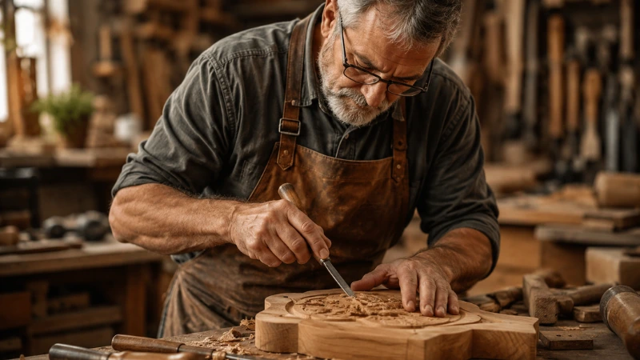

Nossa Jornada de Arte e Dedicação Rústica
A empresa Madeira Velha Artesanato e Souvenirs iniciou suas atividades com foco em resgatar técnicas tradicionais de marcenaria artística e entalhe manual, valorizando a identidade da divisa de Santa Catarina com o Rio Grande do Sul.
Instalada de forma acolhedora em São João do Sul - SC, nossa trajetória confunde-se com o avanço do turismo de aventura na vizinha Praia Grande - SC. A solidez de nossas mesas, a funcionalidade de nossas tábuas de churrasco e o apelo afetivo de nossos souvenirs nascem do compromisso absoluto com a qualidade.
Para nós, cada pedaço de madeira possui fibras e anéis de crescimento únicos que ditam o formato final da peça. Ao adquirir nossos produtos, você apoia uma estrutura familiar sustentável e leva consigo um pedaço autêntico da terra dos cânions e dos balões coloridos.
